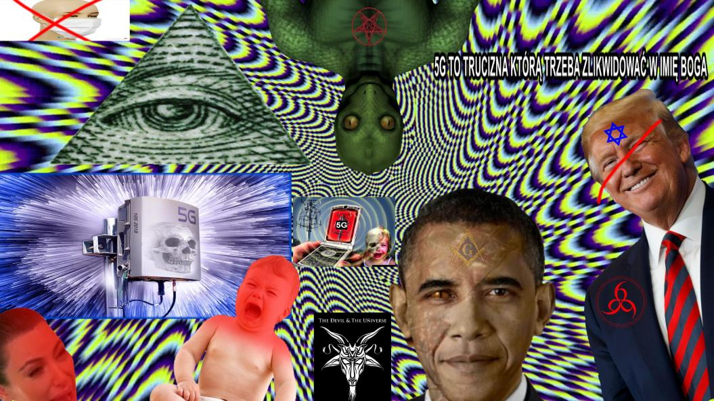

Witaj, na oficjalniej stronie wolnoscod5g.pl gdzie udowodnimy wszelakimi sposobami, że sieć 5G to zło najwszelsze, które próbuje wyeliminować mądrych ludzi i zarządzać tymi mniej inteligentnymi.
5G MIND CONTROl
Strona zawiera samą PRAWDĘ!
Kim jest Bill Gates?
Jak się bronić przed 5G?
Pierwsza metoda:

Druga metoda:
A co jeśli nie mam materiałów na budowę bunkra?
6G jest ostatecznym planem do unicestwienia ludzkości!
"W moim domu na strychu ci dranie zamontowali już próbne maszty 6G! I byłem świadkiem masowych śmierci moich sąsiadów. Ale dzięki mojemu prototypowego pendrive Anty-6G zdołałem przetrwać to starcie."
~Janusz
~Janusz
"Robimy wszystko, co w naszej mocy, aby zhackować rząd i zdobyć dane o 6G."
~Lokalny Haker z Płocka
~Lokalny Haker z Płocka
Zeznania ofiar 5G
"5 dni po tym, kiedy zostałem zaszczepiony na Covid-19 postanowiłem z ciekawości zrobić zdjęcia masztom 5G, ale gdy podszedłem, za blisko mikro neurony Bill Gatesa zmanipulowały, mnie i zmusiły mnie do ucieczki z tego miejsca przy tym chwaląc 5G."
~Mariusz
~Mariusz
"5G nie ma miejsca w Polsce. Nie możemy dopuścić do uruchomienia sieci 5G na całym terenie kraju. To może spowodować wojnę nuklearną!"
~Pudzian
~Pudzian
"Za Hitlera było lepiej."
~Korwin
~Korwin
"5G zrujnowało mi mecz życia w grze Among Us."
~Moosh
~Moosh
"Stomp box saved my thoughts!"
~Nasz narodowy przyjaciel z Ameryki CrappySalami
~Nasz narodowy przyjaciel z Ameryki CrappySalami
"5G to koronawirus."
~Lokalny haker z Płocka
~Lokalny haker z Płocka
"Przez 5G nie missnąłem na harumachi clover."
~Filippu
~Filippu
Jak widać, sieć 5G ma, tylko same WADY!!!
Tajna fabryka szczepionek w Nepalu???
"Wiem o tym, że do każdej szczepionki jest wkładany mikroczip, ale nigdy mi nie powiedzieli co to"
~były pracownik fabryki.
~były pracownik fabryki.
"Niestety nie jesteśmy pewni wszystkich informacji, ponieważ są pilnie strzeżone i prawdopodobnie napisane na papierze – które niestety nie da się zhakować"
~lokalny haker z płocka.
~lokalny haker z płocka.